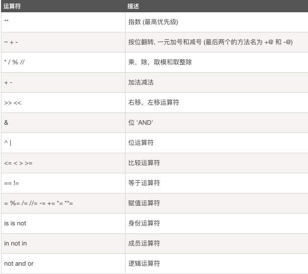

Python3运算符
Python语言支持以下类型的运算符:
算术运算符
比较(关系)运算符
赋值运算符
逻辑运算符
位运算符
成员运算符
身份运算符
运算符优先级#============Python3算术运算符============
假设两个变量x=20 y=30,下面使用算术运算符运算
x = 50
y = 20
print(x + y) #加
print(x - y) #减
print(x * y) #乘
print(x / y) #除
print(x // y) #除法取整数
print(x % y) #除法取余数#============Python3比较运算符============
返回结果显示"true"和"false"
== 判断对象是否相等
!= 比较两个对象是否不相等
> 大于
< 小于
>= 大于等于
<= 小于等于a = 20
b = 30
print(a == b)
print(a != b)
print(a > b)
print(a < b)
print(a >= b)
print(a <= b)输出结果为:
False
True
False
True
False
True#============Python3赋值运算符============
= 简单的赋值运算符 c = a + b 将 a + b 的运算结果赋值为 c
+= 加法赋值运算符 c += a 等效于 c = c + a
-= 减法赋值运算符 c -= a 等效于 c = c - a
*= 乘法赋值运算符 c *= a 等效于 c = c * a
/= 除法赋值运算符 c /= a 等效于 c = c / a
%= 取模赋值运算符 c %= a 等效于 c = c % a
**= 幂赋值运算符 c **= a 等效于 c = c ** a
//= 取整除赋值运算符 c //= a 等效于 c = c // aa = 20
b = 30
c = 10
c = a + b
print(c)
c += a
print(c)
c -= a
print(c)
c *= a
print(c)
c /= a
print(c)
c %= a
print(c)
c //= a
print(c)输出结果为:
50
70
50
1000
50.0
10.0
0.0#============Python3按位运算符============
按位运算符是把数字看作二进制来进行计算的
Python中的按位运算法则如下:
a = 50
b = 70
a的二进制格式就是: 0011 0010
b的二进制格式就是: 0100 0110
1、a & b = 0000 0010
按位与运算的运算符是 &,它有 2 个操作数,其运算法则是,如果两个相应位都为1,则该位的结果为1,否则为0
c = a & b
print(c)
输出结果为:
2
2、a | b = 0111 0110
按位或运算的运算符是 |,它有 2 个操作数,运算法则是,只要对应的二个二进位有一个为1时,结果位就为1
c = a | b
print(c)
输出结果为:
118
3、a ^ b = 0111 0100
按位异或运算的运算符是 ^,它有 2 个操作数,运算法则是,按位将 2 个操作数对应的二进制数一一对应,当对应位的二进制值相同（同为 0 或同为 1）时,所得结果为 0;反之,则为 1
c = a ^ b
print(c)
输出结果为:
116
4、a << 3 = 1001 0000
左移动运算符：运算数的各二进位全部左移若干位，由"<<"右边的数指定移动的位数，高位丢弃，低位补0
c = a << 3
print(c)
输出结果为:
400
5、a >> 3 = 0000 0110
右移动运算符：把">>"左边的运算数的各二进位全部右移若干位，">>"右边的数指定移动的位数
c = a >> 3
print(c)
输出结果为:
6
6、~a = 1100 1101
按位取反,也常称为"按位非"运算,此运算的运算符为 ~,它只有 1 个操作数,其运算法则为: 将操作数的所有二进制位 1 改为 0,0 改为 1
c = ~a
print(c)
输出结果为:
-51
#============Python3逻辑运算符============
Python支持逻辑运算符如下:
and
or
not优先级: ()>not>and>or
1、and
逻辑运算符and, x and y ,如果x的值为True,and的运算不会结束,会继续看y的值,所以此时真与假取决于y的值,所以x如果为真,则返回y的值;
如果x为假,那么and运算就会结束运算过程了,因为有一个为假则and为假,所以返回x的值
2、or
逻辑运算符or, x or y 如果x为True则返回x,如果x为False返回y值; 因为如果x为True那么or运算就不需要在运算了,因为一个为真则为真,
所以返回x的值;如果x的值为假,那么or运算的结果取决于y,所以返回y的值
3、not
not 如果 x 为 True,返回 False;如果 x 为 False,它返回 True
#============Python3成员运算符============
in 如果在指定的序列中找到值返回 True,否则返回 False
not in 如果在指定的序列中没有找到值返回 True,否则返回 Falselist = ['james','b','c','d','e','f','g']
a = 'james'
z = 'wade'
print(a in list)
print(z in list)
print(a not in list)
print(z not in list)
if (a in list):
print('变量a在list列表中')
else:
print('变量a不在list列表中')
if (z in list):
print('变量z在list列表中')
else:
print('变量z不在list列表中')
if (a not in list):
print('变量a不在list列表中')
else:
print('变量a在list列表中')
if (z not in list):
print('变量z不在list列表中')
else:
print('变量z在list列表中')输出结果为:
True
False
False
True
变量a在list列表中
变量z不在list列表中
变量a在list列表中
变量z不在list列表中#============Python3身份运算符============
is is 是判断两个标识符是不是引用自一个对象,x is y, 类似 id(x) == id(y) , 如果引用的是同一个对象则返回 True,否则返回 False
is not is not是判断两个标识符是不是引用自不同对象,x is not y ,类似 id(a) != id(b);如果引用的不是同一个对象则返回结果 True,否则返回 Falsea = 30
b = 70
print(a is b)
print(a is not b)
if (a is b):
print('a和b有相同的标识符')
else:
print('a和b的标识符不相同')
b = 30
if (a is not b):
print('a和b的标识符不相同')
else:
print('a和b有相同的标识符')输出结果为:
False
True
a和b的标识符不相同
a和b有相同的标识符重要: is 与 == 区别;"is"用于判断两个变量引用对象是否为同一个,"==" 用于判断引用变量的值是否相等
#============Python3运算符优先级============
从最高到最低优先级的所有运算符:
